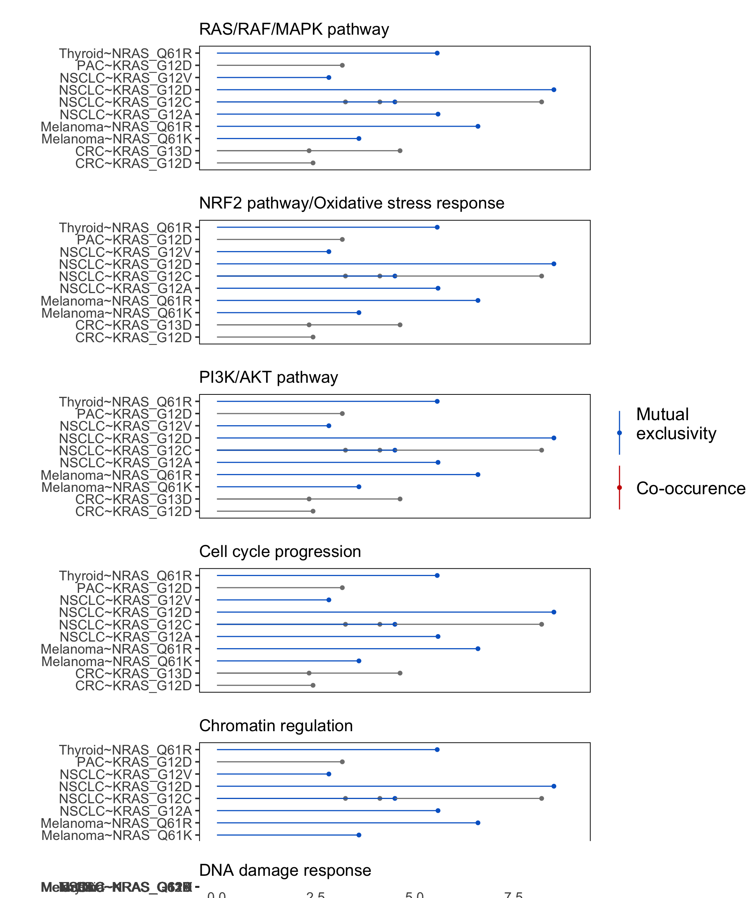
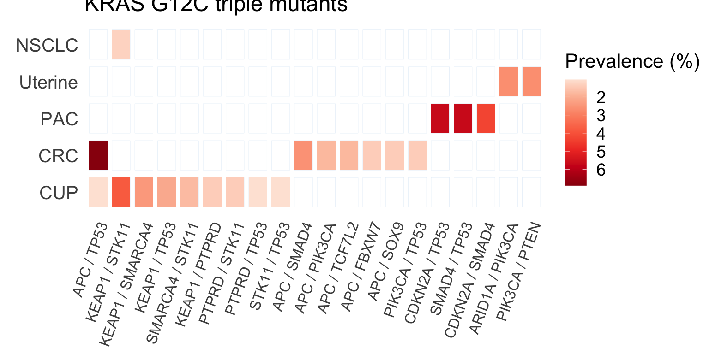
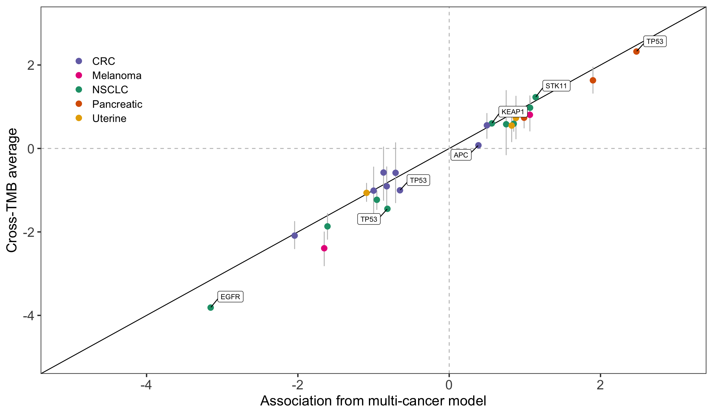
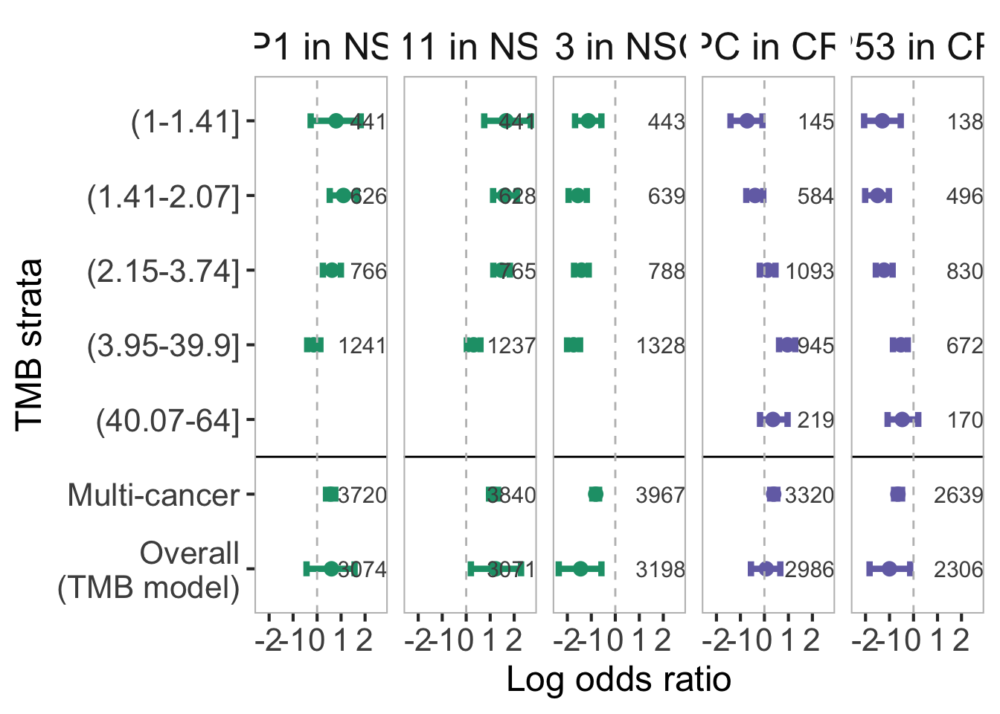
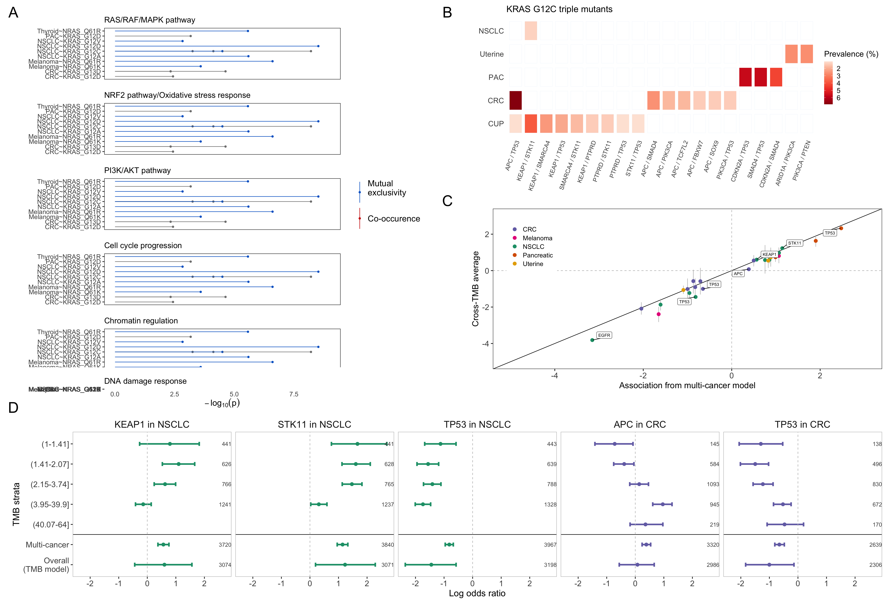

Last updated: 2022-08-18
Checks: 7 0
Knit directory: genie/
This reproducible R Markdown analysis was created with workflowr (version 1.7.0). The Checks tab describes the reproducibility checks that were applied when the results were created. The Past versions tab lists the development history.
Great! Since the R Markdown file has been committed to the Git repository, you know the exact version of the code that produced these results.
Great job! The global environment was empty. Objects defined in the global environment can affect the analysis in your R Markdown file in unknown ways. For reproduciblity it’s best to always run the code in an empty environment.
The command set.seed(20220803) was run prior to running
the code in the R Markdown file. Setting a seed ensures that any results
that rely on randomness, e.g. subsampling or permutations, are
reproducible.
Great job! Recording the operating system, R version, and package versions is critical for reproducibility.
Nice! There were no cached chunks for this analysis, so you can be confident that you successfully produced the results during this run.
Great job! Using relative paths to the files within your workflowr project makes it easier to run your code on other machines.
Great! You are using Git for version control. Tracking code development and connecting the code version to the results is critical for reproducibility.
The results in this page were generated with repository version 74b2b93. See the Past versions tab to see a history of the changes made to the R Markdown and HTML files.
Note that you need to be careful to ensure that all relevant files for
the analysis have been committed to Git prior to generating the results
(you can use wflow_publish or
wflow_git_commit). workflowr only checks the R Markdown
file, but you know if there are other scripts or data files that it
depends on. Below is the status of the Git repository when the results
were generated:
Ignored files:
Ignored: .Rhistory
Untracked files:
Untracked: analysis/co-mutation.Rmd
Untracked: analysis/fig_s1.Rmd
Untracked: analysis/fig_s10.Rmd
Untracked: analysis/fig_s11.Rmd
Untracked: analysis/fig_s12.Rmd
Untracked: analysis/fig_s13.Rmd
Untracked: analysis/fig_s14.Rmd
Untracked: analysis/fig_s15.Rmd
Untracked: analysis/fig_s16.Rmd
Untracked: analysis/fig_s17.Rmd
Untracked: analysis/fig_s18.Rmd
Untracked: analysis/fig_s19.Rmd
Untracked: analysis/fig_s2.Rmd
Untracked: analysis/fig_s20.Rmd
Untracked: analysis/fig_s3.Rmd
Untracked: analysis/fig_s4.Rmd
Untracked: analysis/fig_s5.Rmd
Untracked: analysis/fig_s6.Rmd
Untracked: analysis/fig_s7.Rmd
Untracked: analysis/fig_s8.Rmd
Untracked: analysis/fig_s9.Rmd
Untracked: analysis/methods_comparison.Rmd
Untracked: analysis/potential_confounding.Rmd
Untracked: code/TCGA-COAD/
Untracked: code/TCGA-LUAD-trips/
Untracked: code/TCGA-LUAD/
Untracked: code/TCGA-PAAD/
Untracked: code/co-mutation/
Untracked: code/misc/
Untracked: code/sets/
Untracked: code/stan/
Untracked: output/co-mutation/
Untracked: output/gsea_data_wrangling.Rmd/
Untracked: output/methods-comparison/
Untracked: output/mutsig_s13/
Untracked: output/prevalence/
Untracked: public/
Unstaged changes:
Modified: .Rprofile
Modified: .gitattributes
Modified: .gitignore
Modified: README.md
Modified: _workflowr.yml
Modified: analysis/_site.yml
Modified: analysis/about.Rmd
Modified: analysis/fig7.Rmd
Modified: analysis/index.Rmd
Modified: analysis/license.Rmd
Modified: code/README.md
Modified: data/README.md
Modified: genie_ras_hallmarks.Rproj
Modified: output/README.md
Note that any generated files, e.g. HTML, png, CSS, etc., are not included in this status report because it is ok for generated content to have uncommitted changes.
These are the previous versions of the repository in which changes were
made to the R Markdown (analysis/fig5.Rmd) and HTML
(docs/fig5.html) files. If you’ve configured a remote Git
repository (see ?wflow_git_remote), click on the hyperlinks
in the table below to view the files as they were in that past version.
| File | Version | Author | Date | Message |
|---|---|---|---|---|
| Rmd | af43f9e | abalan2 | 2022-08-04 | add code for fig5 |
library(ggplot2)
library(plyr)
library(reshape2)
library(cowplot)
library(tidyverse)
library(grid)
library(gridExtra)
library(RColorBrewer)
library(readxl)
library(scales)
library(here)
library(ggrepel)
library(purrr)
library(rasfuns)here <- here::here
# Read any mutations csv for gene pathways
comut_gp <- here("public",
"table",
"co_mutation_allele.Rmd",
"any_mutation_(gene_pathways).csv") %>%
read_csv(show_col_types=FALSE)
# list of co-muts and cancer types to plot
plot_gp <- read_excel( here( "data","ras_pathway_pval.xlsx"))
comut_gp <- comut_gp %>%
mutate(ras = gsub("_1", "_G1",ras ))%>%
mutate(ras = gsub("_6", "_Q6",ras ))%>%
mutate(index = paste0(cancer, "~",
ras, "~", nonras))
gene_pathway.levels <- table(plot_gp %>% select(gene_pathway)) %>%
as.data.frame() %>%
arrange(desc(Freq))
gene_pathway.levels <- as.character(gene_pathway.levels$Var1)
plot.df <- plot_gp %>%
mutate(ras = gsub(":", "_",ras ))%>%
mutate(index = paste0(cancer_full, "~", ras, "~", gene_pathway))%>%
merge(., comut_gp %>% select(index, p, `50%`), by.x = "index", by.y = "index" , all.x = TRUE)%>%
mutate(cancer = factor(cancer, levels = unique(cancer))) %>%
mutate(gene_pathway = factor(gene_pathway, levels = gene_pathway.levels)) %>%
mutate(ras = factor(ras, levels = unique(ras))) %>% mutate(y=0)%>%
mutate(ras_cancer = paste0(cancer, '~', ras))%>%
mutate(ras_cancer = factor(ras_cancer, levels = unique(ras_cancer))) %>%
mutate(comut_type = ifelse(`50%`>0, "co-occurence" , "mutual-exclusivity"))%>%
mutate(comut_type =factor(comut_type, levels = unique(comut_type)) )%>%
select(-c("logp", "type"))col.pal <- c("#0066cc","#cc0000")
names(col.pal) <- c( 'Mutual\nexclusivity\n', '\nCo-occurence\n')
dat.list <- plot.df %>%
mutate(gene_pathway=case_when(gene_pathway=="RAS_RAF_MAPK_brief"~"RAS_RAF_MAPK",
gene_pathway=="RAS_RAF_MAPK_extended"~"RAS_RAF_MAPK",
TRUE~as.character(gene_pathway)),
comut_type=case_when(comut_type=="mutual-exclusivity"~"Mutual\nexclusivity\n",
comut_type=="co-occurrence"~"\nCo-occurrence\n")) %>%
group_by(gene_pathway) %>%
nest()
pathways <- tibble(label=c("RAS/RAF/MAPK pathway",
"NRF2 pathway/Oxidative stress response",
"PI3K/AKT pathway",
"Cell cycle progression",
"Chromatin regulation",
"DNA damage response"),
gene_pathway=dat.list$gene_pathway[c(3, 2, 1, 6, 4, 5)]) %>%
mutate(label=factor(label, label))
dat.list2 <- dat.list %>%
left_join(pathways, by="gene_pathway") %>%
arrange(label)
lollipop_plot <- function(dat){
dat %>%
ggplot(aes(ras_cancer, p,
fill = comut_type,
color = comut_type)) +
geom_point(aes(fill=comut_type))+
geom_linerange(aes(ymin = y, ymax = p,
color = comut_type))+
coord_flip()+
scale_fill_manual(values = col.pal, name = '',
guide = guide_legend(position = 'none',
direction = "vertical")) +
scale_color_manual(values = col.pal,
name = '',
guide = guide_legend(position = 'none',
direction = "vertical")) +
ylab("-log10 p")+
xlab("")+
theme_classic(base_size=15) +
theme(axis.line=element_blank(),
axis.ticks.x = element_blank(),
plot.margin = margin(0,0,0,0, "cm"),
axis.text.y = element_text(size=13, angle = 0),
##axis.text.x = element_text(size=10, angle =0),
axis.text.x=element_blank(),
axis.title.x=element_blank(),
panel.grid= element_blank() ,
panel.border = element_rect(fill=NA),
plot.title = element_text(hjust=0.5, size = 10)) +
ylim(c(0, 9)) +
guides(color="none", fill="none")
}
gl <- map(dat.list2$data, lollipop_plot)
names(gl) <- dat.list2$label
for(i in 1:6){
gl[[i]] <- gl[[i]] + ggtitle(names(gl)[i]) +
theme(plot.title=element_text(size=16, hjust=0),
plot.margin=unit(c(1.5, 1.5, 0, 1.5), "lines"))
}
gl[[6]] <- gl[[6]] +
theme(axis.text.x=element_text(size=13),
axis.title.x=element_text(size=17)) +
ylab(expression(-log[10](p)))
tmp <- gl[[6]] +
theme(legend.text=element_text(size=17)) +
guides(color=guide_legend(title=""))
leg <- cowplot::get_legend(tmp)
gl <- map(gl, ggplotGrob)
w <- gl[[1]]$widths
for(i in 2:6) gl[[i]]$widths <- w
gl[[7]] <- leg
heights <- map_int(dat.list2$data, nrow)
heights[heights==1] <- 1.5
## compensate for x-axis and title
heights[6] <- 2.2
grid.arrange(grobs=gl,
widths=c(1, 0.22),
heights=heights,
layout_matrix=cbind(1:6, 7))
A <- arrangeGrob(grobs=gl,
widths=c(1, 0.22),
heights=heights,
layout_matrix=cbind(1:6, 7))
## todo
## add title to each panel
## use classic themeload(here("output", "co-mutation","kras12c_tripleMuts.rda"))
threshold <- 1
plot.df <- c()
for(cancer in names(kras12c_tripleMuts)){
tmp.df <- kras12c_tripleMuts [[cancer]] %>%
filter(intersect.percent >= threshold)%>%
mutate(cancer_type = cancer)
plot.df = rbind(plot.df ,tmp.df )
}
plot.df <- plot.df %>%
mutate(cancer_type = recode(cancer_type, "non-small cell lung cancer"="NSCLC" ,
"cancer of unknown primary" = "CUP",
"colorectal cancer" = "CRC",
"pancreatic cancer" = "PAC",
"uterine cancer" = "Uterine")) %>%
mutate(gene = paste0("KRAS_", gene)) %>%
arrange(desc(intersect.percent))
cancer.levels <- c("CUP", "CRC" ,
"PAC", "Uterine",
"NSCLC")
plot.df$cancer_type <- factor(plot.df$cancer_type, levels = cancer.levels)
gene.levels <- data.frame(table(plot.df$gene)) %>% arrange(desc(Freq))
gene.levels <- gene.levels$Var1
plot.df <- plot.df %>%
arrange(desc(intersect.percent)) %>%
arrange(factor(gene, levels = gene.levels))
tmp.df <- plot.df[-c(1:4), ] %>%
arrange(desc(intersect.percent)) %>%
arrange(factor(cancer_type, levels = cancer.levels))
plot.df <- rbind(plot.df[c(1:4), ], tmp.df)base <- expand.grid(unique(plot.df$cancer_type),
unique(plot.df$gene))
base$gene <- rev(base$gene)
colnames(base) <- c('cancer_type', 'gene')
base$cancer_type <- factor(base$cancer_type,
levels = unique(cancer.levels))
base$gene <- factor(base$gene,
levels = rev(unique(base$gene)))
genelevels <- unique(base$gene[1:100]) %>%
str_replace_all("_", " / ") %>%
str_replace_all("KRAS / ", "")
base2 <- base[c(1:100), ] %>%
mutate(gene=as.character(gene)) %>%
mutate(gene=str_replace_all(gene, "_", " / ")) %>%
mutate(gene=str_replace_all(gene, "KRAS / ", "")) %>%
mutate(gene=factor(gene, genelevels))
plot.df <- plot.df %>%
mutate(gene=as.character(gene)) %>%
mutate(gene=str_replace_all(gene, "_", " / ")) %>%
mutate(gene=str_replace_all(gene, "KRAS / ", "")) %>%
mutate(gene=factor(gene, genelevels))
cm4 <- ggplot(base2, aes(x = gene, y = cancer_type)) +
geom_tile(fill = '#ffffff',
color = '#deebf7',
width = 0.8,
height = 0.8) +
theme_minimal() +
geom_tile(data = plot.df %>%
subset(gene %in% unique(base2[ , 'gene'])),
aes(fill = intersect.percent),
size = 0.8,
width = 0.8,
height= 0.8) +
scale_fill_distiller(palette = 'Reds',
name = 'Prevalence (%)',
values = rescale(1:10),
guide = guide_colorbar(direction = "vertical"),
trans = "reverse") +
theme(#axis.ticks.x = element_blank(),
plot.margin = margin(-0.5,-0.5,-0.5,-0.5, "cm"),
axis.text.x = element_text(size = 12,
angle = 70,
hjust=1),
axis.text.y = element_text(size = 15, angle = 0),
panel.grid = element_blank(),
title = element_text(size = 8),
strip.background = element_blank(),
strip.text = element_blank(),
legend.title=element_text(size=16),
legend.text=element_text(size=14),
plot.title=element_text(size=18))+
ylab("") + xlab("") +
ggtitle("KRAS G12C triple mutants")
aggregate.plot3 <- plot_grid(NULL, cm4, NULL ,
nrow = 1,
rel_widths = c(0.25, 8, 0.25))
B <- plot_grid(NULL, aggregate.plot3,
NULL , ncol = 1,
rel_heights = c(0.30, 8, 0.25))
Bg <- ggplotGrob(B)
B
#source(here("code", "co-mutation", "stan_funs.R"))
##devtools::load_all(here("code", "rasfuns"))
cancerlabs <- read_csv(here("data", "cancer_labels.csv"))Rows: 51 Columns: 2
── Column specification ────────────────────────────────────────────────────────
Delimiter: ","
chr (2): cancer, cancer_label
ℹ Use `spec()` to retrieve the full column specification for this data.
ℹ Specify the column types or set `show_col_types = FALSE` to quiet this message.colors <- readRDS(here("output", "co-mutation",
"summarize_models.R",
"colors.rds")) %>%
left_join(cancerlabs, by="cancer") %>%
mutate(cancer=cancer_label)
cols <- setNames(colors$color, colors$cancer)extdir <- system.file("extdata", package="genie.6.1")
fname <- file.path(extdir, "tumor_normal_predictions.csv")
data(mutation_tmb, package="contingency.table")
data(patient_universe, package="genie.6.1")
matched_universe <- filter(patient_universe, is_matched)
tmb_labels <- read_csv(fname) %>%
rasfuns:::attach_tmb_label(matched_universe)Rows: 39289 Columns: 8
── Column specification ────────────────────────────────────────────────────────
Delimiter: ","
chr (5): patient_id, sample_id, center, seq_assay_id, Estimate
dbl (3): Panel_Counts, Lower_Estimate, Upper_Estimate
ℹ Use `spec()` to retrieve the full column specification for this data.
ℹ Specify the column types or set `show_col_types = FALSE` to quiet this message.Select the following: STK11 and KEAP1 in NSCLC TP53, inactivating APC in CRC
comutation <- here("output", "co-mutation", "summarize_models.R",
"combined.rds") %>%
readRDS() %>%
unnest(data) %>%
ungroup() %>%
left_join(cancerlabs, by="cancer") %>%
mutate(cancer=cancer_label) %>%
group_by(cancer_group, alteration_group, confounder) %>%
nest()
## significant associations in multi-cancer model
## -log10p > 6
sig_multicancer <- rasfuns:::significant_multicancer
filter_sig <- rasfuns:::filter_by_signif
signif <- sig_multicancer(comutation,
group_="Any mutation",
ras_="RAS_12-61",
p_cutoff=6)
isignif <- sig_multicancer(comutation,
group_="Inactivating mutation",
ras_="RAS_12-61",
p_cutoff=6) %>%
filter(!nonras %in% signif$nonras & cancer %in% signif$cancer)
signif <- bind_rows(signif, isignif)
add_tmb_label <- rasfuns:::add_tmb_label
filter_by <- rasfuns:::filter_by
x <- comutation %>%
filter_by(c("Any mutation",
"Inactivating mutation"),
"RAS_12-61", "TMB") %>%
add_tmb_label(tmb_labels) %>%
filter_sig(signif)
ylist <- rasfuns:::list_signif_by(signif, x$uid)
effect_list <- rasfuns:::list_confounding(ylist, x)Identify co-mutations in the stratified analysis with 95% credible intervals that do not overlap the 95% credible interval in the multi-cancer model. Focus on the set of co-mutations in which the association in the multi-cancer model was statistically significant.
Several co-mutations significant in the multi-cancer model are not in
the stratified analyses. In the stratified analyses, we required that
the number of RAS mutations and the number of non-RAS mutations must
each be > 100 (l. 133,
contingency.table/data-derived/mutations_tmb.R).
Below, we plot overall versus multi-cancer, highlighting the genes with apparent discordance in 1 or more TMB strata.
rename <- dplyr::rename
multicancer <- effect_list$data[[1]] %>%
select(nonras, alteration_group, cancer, `50%`) %>%
unite("uid", c(nonras, alteration_group, cancer)) %>%
rename(x="50%")
tmb <- effect_list$data[[2]] %>%
map_dfr(function(x) filter(x, grepl("mu_beta", Parameter))) %>%
select(nonras, alteration_group, cancer, `50%`, `2.5%`, `97.5%`) %>%
unite("uid", c(nonras, alteration_group, cancer)) %>%
rename(y="50%")
dat <- left_join(multicancer, tmb, by="uid") %>%
separate(uid, c("nonras", "alt_group", "cancer"), sep="_")
multicancer2 <- effect_list$data[[3]] %>%
select(nonras, alteration_group, cancer, `50%`) %>%
unite("uid", c(nonras, alteration_group, cancer)) %>%
rename(x="50%")
tmb2 <- effect_list$data[[4]] %>%
map_dfr(function(x) filter(x, grepl("mu_beta", Parameter))) %>%
select(nonras, alteration_group, cancer, `50%`, `25%`, `75%`) %>%
unite("uid", c(nonras, alteration_group, cancer)) %>%
rename(y="50%")
dat2 <- left_join(multicancer2, tmb2, by="uid") %>%
separate(uid, c("nonras", "alt_group", "cancer"), sep="_")
all <- bind_rows(dat, dat2) %>%
mutate(cancer=factor(cancer, sort(unique(cancer))))
dat <- dat %>%
mutate(cancer=factor(cancer, levels(all$cancer)))
##stop()
cols <- cols[levels(all$cancer)]
C <- all %>%
ggplot(aes(x, y)) +
geom_abline(intercept=0, slope=1) +
geom_hline(yintercept=0, linetype="dashed", color="gray") +
geom_vline(xintercept=0, linetype="dashed", color="gray") +
geom_errorbar(aes(ymin=`25%`, ymax=`75%`),
color="gray", width=0.01) +
geom_point(aes(color=cancer), size=point.size) +
theme_bw(base_size=base.size) +
##geom_point(size=point.size, pch=21) +
geom_point(data=dat,
aes(color=cancer)) +
geom_label_repel(data=dat,
aes(label=nonras),
fill="white", segment.color="black",
##alpha=0.3,
size=gene.size,
max.overlaps=Inf,
box.padding=0.5) + ##color="transparent") +
ylab("Cross-TMB average") +
xlab("Association from multi-cancer model") +
theme(panel.grid=element_blank(),
legend.position=c(0.1, 0.8),
##legend.position="bottom",
strip.background=element_blank(),
strip.text=element_text(size=strip.size),
axis.text=element_text(size=axis.text),
axis.title=element_text(size=axis.title)) +
xlim(c(-5, 3)) + ylim(c(-5, 3)) +
guides(color=guide_legend(title="")) +
scale_color_manual(values=cols)
##A_leg <- cowplot::get_legend(fig)
##A <- fig + guides(color=FALSE)
C
Cg <- ggplotGrob(C)goi <- c("STK11", "KEAP1", "TP53", "APC")
multicancer <- effect_list$data[[1]] %>%
select(nonras, alteration_group,
cancer, n, `50%`, `2.5%`, `97.5%`) %>%
unite("uid", c(nonras, alteration_group, cancer), remove=FALSE) %>%
mutate(analysis="Multi-cancer") %>%
filter(nonras %in% goi)
tmb <- effect_list$data[[2]] %>%
map_dfr(function(x) filter(x, grepl("mu_beta", Parameter))) %>%
select(nonras, alteration_group,
cancer, n, `50%`, `2.5%`, `97.5%`) %>%
unite("uid", c(nonras, alteration_group, cancer), remove=FALSE) %>%
filter(uid %in% multicancer$uid) %>%
mutate(analysis="Overall\n(TMB model)")
dat <- bind_rows(multicancer, tmb) %>%
select(-uid) %>%
unite(uid, c("nonras", "cancer"), sep=" in ", remove=FALSE)
dat <- dat %>%
filter(!uid %in% "TP53 in Pancreatic") %>%
mutate(analysis=factor(analysis,
c("Multi-cancer", "Overall\n(TMB model)")),
analysis=fct_rev(analysis))
tmb <- effect_list$data[[2]] %>%
map_dfr(function(x) filter(x, grepl("^beta", Parameter))) %>%
select(nonras, alteration_group,
cancer, label, n, `50%`, `2.5%`, `97.5%`) %>%
unite("uid", c(nonras, alteration_group, cancer), remove=FALSE) %>%
filter(uid %in% multicancer$uid) %>%
select(-uid) %>%
unite("uid", c(nonras, cancer), sep=" in ", remove=FALSE)
levels <- c(levels(dat$analysis), levels(tmb$label))
dat2 <- dat %>%
rename(label=analysis) %>%
bind_rows(tmb) %>%
mutate(label=factor(label, levels))
dat3 <- dat2 %>%
filter(!uid %in% "TP53 in Pancreatic") %>%
mutate(uid=factor(uid,
levels=c("KEAP1 in NSCLC",
"STK11 in NSCLC", "TP53 in NSCLC",
"APC in CRC", "TP53 in CRC")))
D <- dat3 %>%
ggplot(aes(`50%`, label)) +
geom_errorbarh(aes(xmin=`2.5%`, xmax=`97.5%`,
color=cancer), height=bar.height,
size=1.5) +
geom_point(##pch=21, fill="white",
size=point.size, aes(color=cancer)) +
theme_bw(base_size=base.size) +
geom_text(aes(x=Inf, y=label, label=n), hjust=1,
size=n.size, color="gray30") +
ylab("TMB strata") +
xlab("Log odds ratio") +
geom_hline(yintercept=2.5) +
geom_vline(xintercept=0, linetype="dashed", color="gray") +
theme(panel.border=element_rect(color="gray"),
axis.title=element_text(size=axis.title+1),
##axis.title.y=element_blank(),
strip.text.y=element_blank(),
strip.text.x=element_text(size=axis.title+2),
axis.text.x=element_text(size=axis.text),
axis.text.y=element_text(size=axis.text),
panel.grid=element_blank(),
legend.position="bottom",
strip.background=element_blank()) +
facet_wrap(~uid, ncol=5) +#, nrow=1) +
scale_color_manual(values=cols) +
guides(color='none')
D
Dg <- ggplotGrob(D)grid.newpage()
gl <- list(A,
Bg,
Cg,
Dg,
grob(),
grob(),
grob())
vp <- viewport(width=unit(0.98, "npc"),
height=unit(0.98, "npc"))
pushViewport(vp)
grid.arrange(grobs=gl,
heights=c(1, 0.05, 1, 0.1, 1),
widths=c(1, 0.1, 1),
newpage=FALSE,
layout_matrix=rbind(c(1, 6, 2),
c(1, 6, 7), ## space between panels B and C
c(1, 6, 3),
c(5, 6, 5),
c(4, 6, 4)))
upViewport()
grid.text("A", x=unit(0.015, "npc"), y=unit(0.98, "npc"),
gp=gpar(cex=2.5))
grid.text("B", x=unit(0.5, "npc"), y=unit(0.98, "npc"),
gp=gpar(cex=2.5))
grid.text("C", x=unit(0.5, "npc"), y=unit(0.67, "npc"),
gp=gpar(cex=2.5))
grid.text("D", x=unit(0.015, "npc"), y=unit(0.33, "npc"),
gp=gpar(cex=2.5))
gc() used (Mb) gc trigger (Mb) limit (Mb) max used (Mb)
Ncells 4378782 233.9 7242198 386.8 NA 7242198 386.8
Vcells 17832970 136.1 42680404 325.7 16384 35497279 270.9
sessionInfo()R version 4.2.1 (2022-06-23)
Platform: x86_64-apple-darwin21.5.0 (64-bit)
Running under: macOS Monterey 12.5.1
Matrix products: default
BLAS: /usr/local/Cellar/openblas/0.3.20/lib/libopenblasp-r0.3.20.dylib
LAPACK: /usr/local/Cellar/r/4.2.1/lib/R/lib/libRlapack.dylib
locale:
[1] en_US.UTF-8/en_US.UTF-8/en_US.UTF-8/C/en_US.UTF-8/en_US.UTF-8
attached base packages:
[1] grid stats graphics grDevices utils datasets methods
[8] base
other attached packages:
[1] rasfuns_1.1.5 ggrepel_0.9.1 here_1.0.1 scales_1.2.0
[5] readxl_1.4.0 RColorBrewer_1.1-3 gridExtra_2.3 forcats_0.5.1
[9] stringr_1.4.0 dplyr_1.0.9 purrr_0.3.4 readr_2.1.2
[13] tidyr_1.2.0 tibble_3.1.8 tidyverse_1.3.2 cowplot_1.1.1
[17] reshape2_1.4.4 plyr_1.8.7 ggplot2_3.3.6 workflowr_1.7.0
loaded via a namespace (and not attached):
[1] matrixStats_0.62.0 bitops_1.0-7 fs_1.5.2
[4] bit64_4.0.5 lubridate_1.8.0 httr_1.4.3
[7] rprojroot_2.0.3 GenomeInfoDb_1.32.3 tools_4.2.1
[10] backports_1.4.1 bslib_0.4.0 utf8_1.2.2
[13] R6_2.5.1 DBI_1.1.3 BiocGenerics_0.42.0
[16] colorspace_2.0-3 withr_2.5.0 tidyselect_1.1.2
[19] processx_3.7.0 bit_4.0.4 compiler_4.2.1
[22] git2r_0.30.1 cli_3.3.0 rvest_1.0.2
[25] xml2_1.3.3 labeling_0.4.2 sass_0.4.2
[28] callr_3.7.1 digest_0.6.29 rmarkdown_2.14
[31] XVector_0.36.0 pkgconfig_2.0.3 htmltools_0.5.3
[34] highr_0.9 dbplyr_2.2.1 fastmap_1.1.0
[37] rlang_1.0.4 rstudioapi_0.13 farver_2.1.1
[40] jquerylib_0.1.4 generics_0.1.3 jsonlite_1.8.0
[43] vroom_1.5.7 googlesheets4_1.0.1 RCurl_1.98-1.8
[46] magrittr_2.0.3 GenomeInfoDbData_1.2.8 S4Vectors_0.34.0
[49] Rcpp_1.0.9 munsell_0.5.0 fansi_1.0.3
[52] lifecycle_1.0.1 stringi_1.7.8 whisker_0.4
[55] yaml_2.3.5 zlibbioc_1.42.0 parallel_4.2.1
[58] promises_1.2.0.1 crayon_1.5.1 Biostrings_2.64.0
[61] haven_2.5.0 hms_1.1.1 knitr_1.39
[64] ps_1.7.1 pillar_1.8.0 stats4_4.2.1
[67] reprex_2.0.1 glue_1.6.2 evaluate_0.16
[70] getPass_0.2-2 modelr_0.1.8 EnhancedVolcano_1.14.0
[73] vctrs_0.4.1 tzdb_0.3.0 httpuv_1.6.5
[76] cellranger_1.1.0 gtable_0.3.0 assertthat_0.2.1
[79] cachem_1.0.6 xfun_0.32 broom_1.0.0
[82] later_1.3.0 googledrive_2.0.0 gargle_1.2.0
[85] IRanges_2.30.0 ellipsis_0.3.2